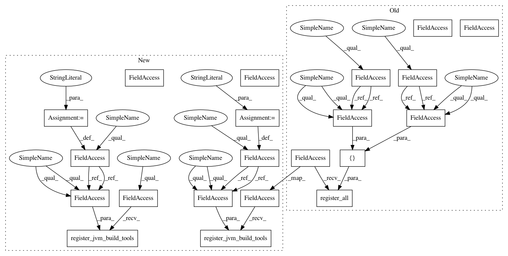

a0a4eba7bf111138c9660e35e34e665961d1e720,src/python/twitter/pants/tasks/java_compile.py,JavaCompile,__init__,#JavaCompile#Any#,86
Before Change
safe_mkdir(self._classes_dir)
safe_mkdir(self._depfile_dir)
self._external_tools = context.config.getlist("java-compile",
"external-tools",
default=[":jmake"])
self._compiler_bootstrap_tools = context.config.getlist("java-compile",
"compiler-bootstrap-tools",
default=[":java-compiler"])
self._bootstrap_utils.register_all([self._external_tools, self._compiler_bootstrap_tools])
self._opts = context.config.getlist("java-compile", "args")
self._jvm_args = context.config.getlist("java-compile", "jvm_args")
After Change
safe_mkdir(self._classes_dir)
safe_mkdir(self._depfile_dir)
self._jmake_bootstrap_key = "jmake"
external_tools = context.config.getlist("java-compile", "jmake-bootstrap-tools", default=[":jmake"])
self._bootstrap_utils.register_jvm_build_tools(self._jmake_bootstrap_key, external_tools)
self._compiler_bootstrap_key = "java-compiler"
compiler_bootstrap_tools = context.config.getlist("java-compile", "compiler-bootstrap-tools",
default=[":java-compiler"])
self._bootstrap_utils.register_jvm_build_tools(self._compiler_bootstrap_key, compiler_bootstrap_tools)
self._opts = context.config.getlist("java-compile", "args")
self._jvm_args = context.config.getlist("java-compile", "jvm_args")
In pattern: SUPERPATTERN
Frequency: 3
Non-data size: 21
Instances
Project Name: pantsbuild/pants
Commit Name: a0a4eba7bf111138c9660e35e34e665961d1e720
Time: 2013-11-25
Author: benjy@foursquare.com
File Name: src/python/twitter/pants/tasks/java_compile.py
Class Name: JavaCompile
Method Name: __init__
Project Name: pantsbuild/pants
Commit Name: a0a4eba7bf111138c9660e35e34e665961d1e720
Time: 2013-11-25
Author: benjy@foursquare.com
File Name: src/python/twitter/pants/tasks/junit_run.py
Class Name: JUnitRun
Method Name: __init__
Project Name: pantsbuild/pants
Commit Name: a0a4eba7bf111138c9660e35e34e665961d1e720
Time: 2013-11-25
Author: benjy@foursquare.com
File Name: src/python/twitter/pants/tasks/benchmark_run.py
Class Name: BenchmarkRun
Method Name: __init__
Project Name: pantsbuild/pants
Commit Name: a0a4eba7bf111138c9660e35e34e665961d1e720
Time: 2013-11-25
Author: benjy@foursquare.com
File Name: src/python/twitter/pants/tasks/java_compile.py
Class Name: JavaCompile
Method Name: __init__